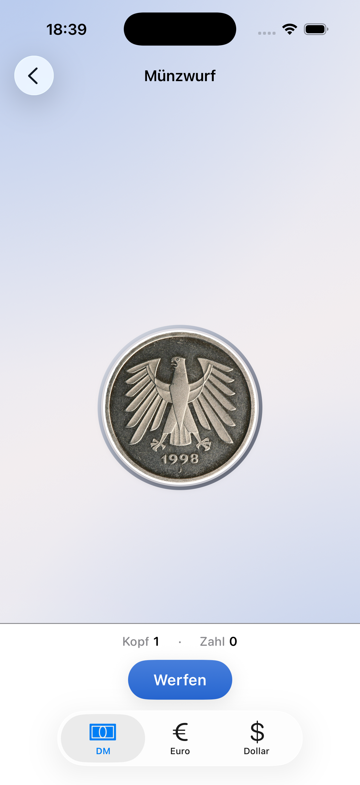

Startseite
Ein Screen, alle Modi direkt erreichbar
Das echte Home-Screenshot transportiert die App besser als jede Illustration: klare Navigation, helles Theme und die komplette Funktionsbreite auf den ersten Blick.

Decision Helper bündelt Glücksrad, Münzwurf, Zufallszahl, Finger Picker und Würfel in einer hellen, reduzierten Oberfläche. Schnell, lokal auf dem Gerät und ohne Tracking-Ballast.


Statt abstrahierter Platzhalter zeigt die Seite jetzt dein echtes App-Icon, echte Oberflächen und vorhandene App-Store-Motive. Das wirkt sofort glaubwürdiger.
Das echte Home-Screenshot transportiert die App besser als jede Illustration: klare Navigation, helles Theme und die komplette Funktionsbreite auf den ersten Blick.
Der Münzwurf-Screen zeigt die reale UI mit den Coin-Themes. Dadurch ist direkt sichtbar, wie die App arbeitet und wie sich die Catppuccin-Latte-Flächen in der Praxis anfühlen.

Die App speichert Einstellungen und Vorlagen lokal auf dem Gerät. Es gibt kein eingebautes Analytics-SDK, kein Werbetracking und keine zentrale Cloud für Nutzungsdaten.
Diese Website trennt klar zwischen Marketing, Support, Datenschutz und Impressum. Dadurch kannst du die relevanten URLs direkt in App Store Connect hinterlegen, statt alles auf einer unübersichtlichen Seite zu mischen.
Die vorhandenen App-Store-Bilder geben der Seite eine klare Produktnähe und machen die Website weniger generisch.
Nach aktuellem Projektstand verarbeitet Decision Helper vor allem lokal gespeicherte App-Daten wie Sprache, Theme, Sounds, Haptik und deine Vorlagen für das Glücksrad. Es gibt kein eingebautes Tracking und keine Werbenetzwerke.
Für Support-Anfragen, Feedback und App-Store-Rückfragen gibt es eine eigene Support-Seite mit Kontaktadresse, Basisinfos zur App und einer kurzen FAQ für häufige Punkte.